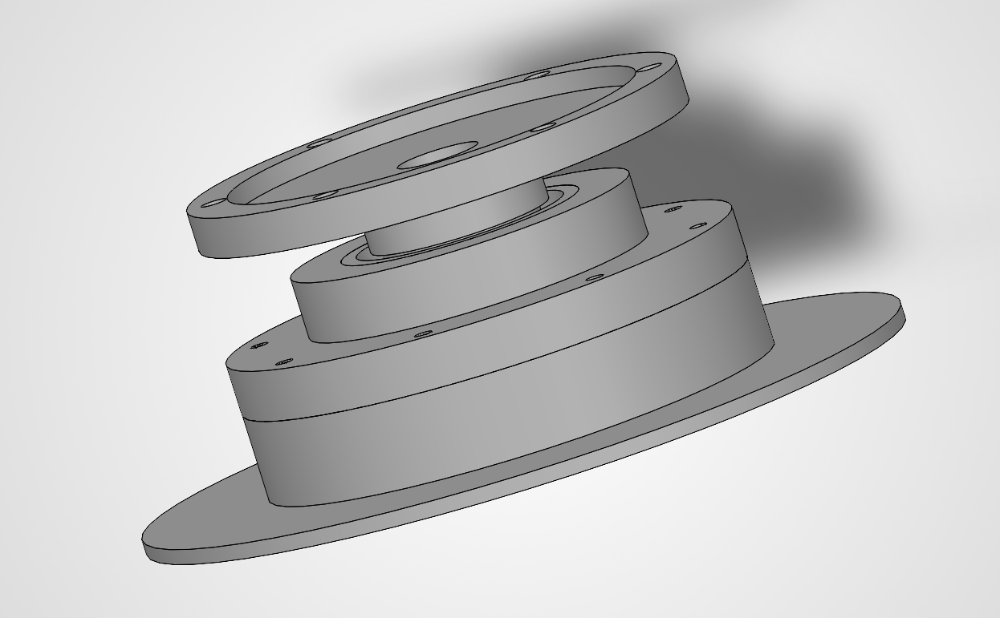
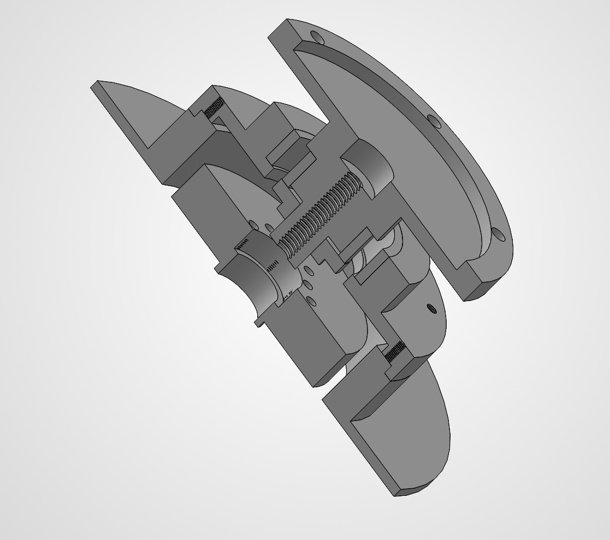
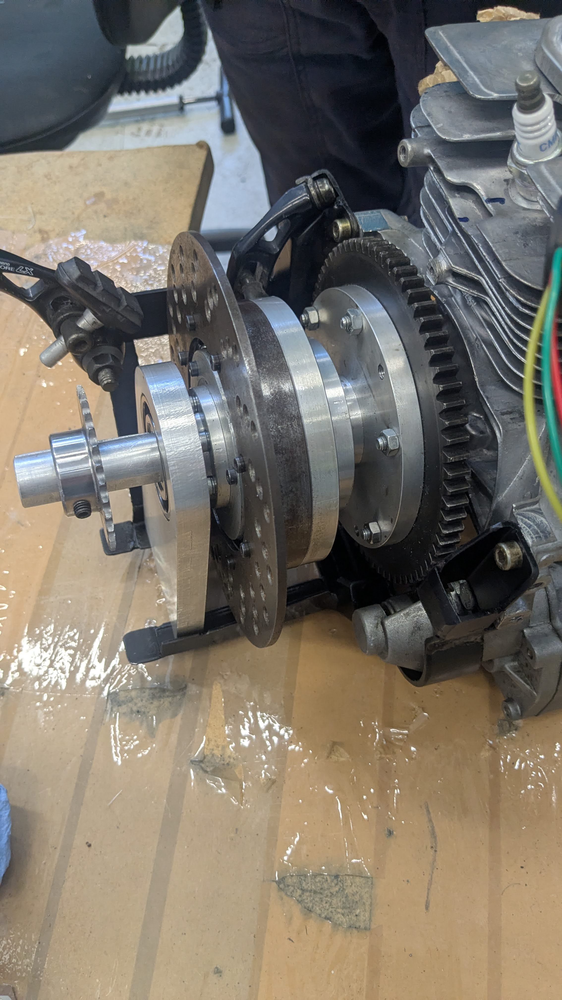
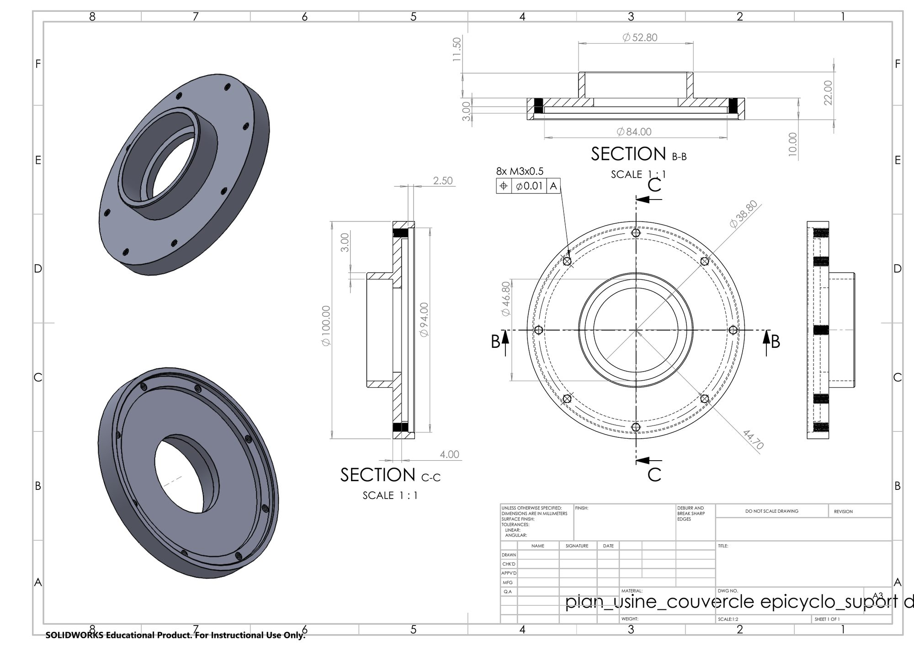
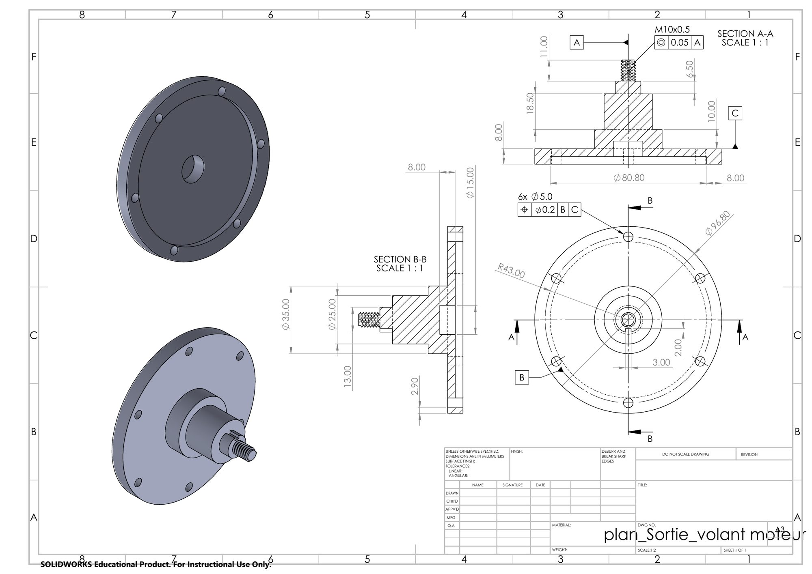
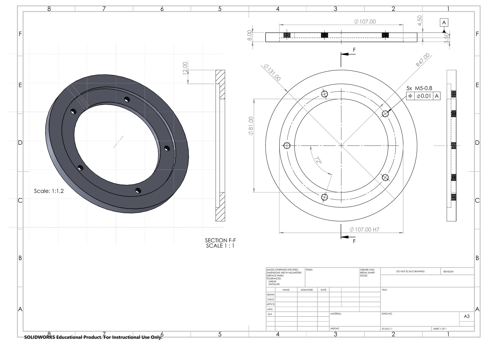

Description approfondie du projet
Conception et fabrication de la transmission d'un prototype d'efficience énergétique, de la CAO SolidWorks jusqu'à la pièce usinée montée sur le moteur.
Au sein de l'association étudiante Valmev de l'INSA Hauts-de-France, j'ai participé à la création et au développement du prototype engagé dans le Shell Eco-marathon, une compétition où des équipes étudiantes conçoivent des véhicules capables de parcourir la plus grande distance avec le moins d'énergie possible. Dans ce contexte, chaque gramme et chaque perte mécanique comptent : la transmission doit être légère, précise et fiable.
Missions & réalisations
- Conception CAO : modélisation de la chaîne de transmission sous SolidWorks, avec vérification de l'assemblage en vue éclatée et en coupe (vis, roulements, carters).
- Plans de fabrication : mise en plan normalisée de trois pièces (couvercle épicycloïdal et support de roulement, sortie de volant moteur, couronne de démarreur), avec cotation fonctionnelle et tolérances géométriques.
- Relation avec l'usineur : transmission des plans, échanges sur la faisabilité et suivi de la fabrication.
- Composites : drapage de fibre de carbone et de fibre de verre pour des éléments de carrosserie.
De la CAO à la pièce usinée
La démarche suit une chaîne simple : modéliser la transmission en 3D, contrôler en coupe que les pièces se logent et s'assemblent, puis traduire chaque pièce en plan que l'usineur peut produire sans ambiguïté. Un plan d'usinage doit donc dire non seulement quelles sont les dimensions, mais aussi avec quelle précision elles doivent être tenues, car un défaut de centrage ou de coaxialité se paie directement en frottements et en vibrations.
Plans d'usine & CAO
La vue d'assemblage donne l'architecture d'ensemble. La coupe met en évidence l'empilement des pièces autour de la vis, des roulements et des carters, ce qui a permis de contrôler les jeux et les appuis avant de lancer l'usinage.


Les trois pièces usinées
| Pièce | Caractéristiques principales | Exigences de précision |
|---|---|---|
| Couvercle épicycloïdal & support de roulement | Disque Ø100 mm, logement Ø84 mm, moyeu Ø52,8 mm, 8 trous M3 | Position des 8 taraudages tenue à Ø0,01 mm par rapport à la référence A |
| Sortie volant moteur | Bride Ø96,8 mm à 6 trous Ø5, arbre étagé Ø25 et Ø15, bout fileté M10×0,5 avec rainure de clavette de 3 mm | Position des trous à Ø0,2 mm ; coaxialité du bout d'arbre à 0,05 mm |
| Couronne de démarreur | Couronne Ø131 mm, alésage Ø107 mm, 5 trous M5 répartis à 72° | Alésage ajusté H7 ; position des taraudages à Ø0,01 mm |
Ces tolérances (ajustement H7, position, coaxialité) sont le cœur d'un plan d'usinage : elles garantissent que les pièces se centrent correctement sur le moteur et que l'ensemble tourne sans jeu ni balourd.
Galerie photos
La transmission une fois usinée et montée sur le moteur : on distingue la couronne dentée, les flasques en aluminium et l'arbre de sortie équipé de son pignon.

Plans d'usinage
Cliquez sur un plan pour l'ouvrir en PDF.



Ce que ce projet m'a apporté
Cette expérience m'a fait passer de la CAO « sur écran » à la contrainte réelle de fabrication : rendre une pièce usinable, choisir quelles tolérances sont vraiment utiles, dialoguer avec un professionnel de l'usinage et constater le résultat monté sur le prototype. Elle m'a aussi donné une première pratique des matériaux composites et du travail en association, avec des délais et des moyens limités.